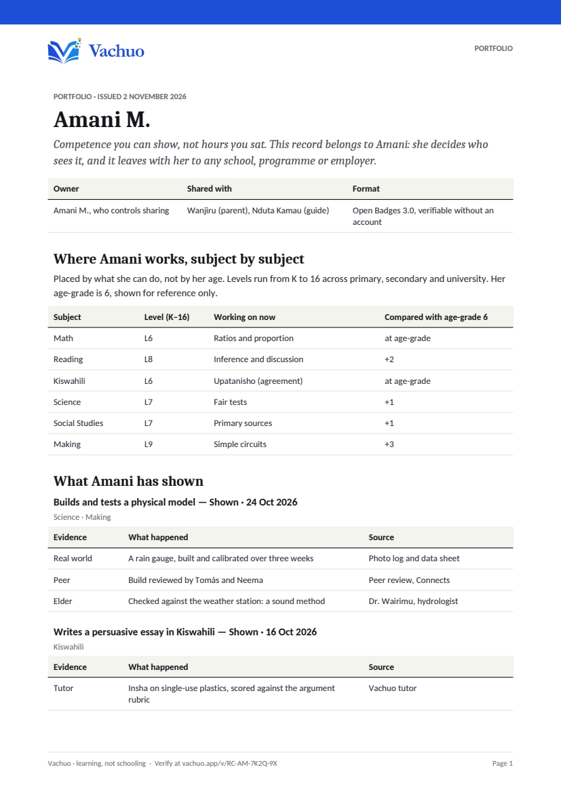
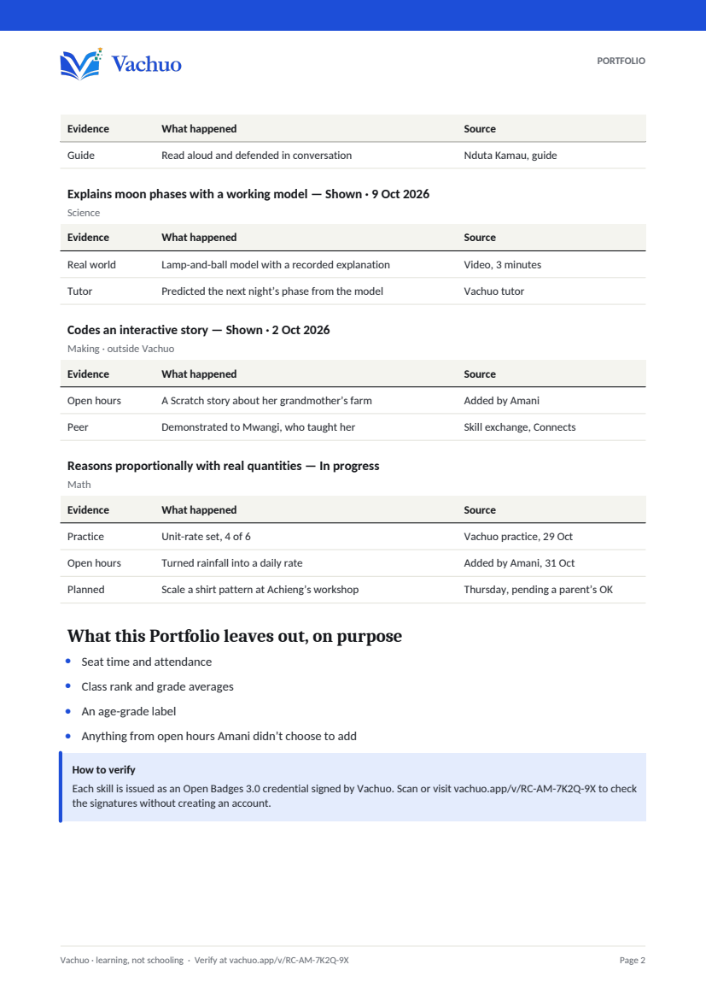

Portfolio · PDF2 pages · 157 KB · issued 2 November 2026
Amani’s Portfolio records what she can do and the evidence behind it. It belongs to her: she decides who sees it, and it leaves with her to any school, programme or employer.

Amani owns this record. She chooses what’s in the link and can switch it off at any time.
A readable PDF for people, and signed Open Badges for systems that verify credentials.


{{jsonPreview}}
{{dlNote}}
A credential is a claim; the work is the evidence. Each piece here is something Amani made, with a word from someone who saw it done. Badges come second, for systems that need them.
Built with Tomás and Neema at Kilimani Makerspace, then checked against the school’s gauge after three storms.
“It read true through three storms. She found the calibration error herself.” Vouched by Dr. Wairimu, soil scientist
A lamp, a ball and a recorded explanation.
“She explained it to her little cousin without notes.” Vouched by Nduta Kamau, her guide
A persuasive essay, read aloud to her grandmother.
“The argument held up to her grandmother’s objections.” Vouched by Nduta Kamau, her guide
In progress: the recipe scaled, to be tested at Grace’s bakery.
“The proof will be in the chapati.” Amani, before the test · not vouched yet, waiting for Grace
Placed by what she can do, not by her age. Her age-grade is drawn for reference only. This chart stays with Amani: it is left out of shared links unless she adds it.
{{filterNote}}
Swipe or use the arrows.Not for a skill, a level or a job. Just because it was interesting. Nothing here is assessed, and it is never shared unless Amani chooses.
Schools often count attendance in place of learning. Vachuo only records what a learner can actually do.
For a school, programme or employer that asks for one. Built from the Portfolio; Amani releases it.
Prepared for {{tr.to}} ({{tr.kind}}) · {{tr.why}}
| Subject | Level | What the level means |
|---|---|---|
| {{r.name}} | L{{r.level}} | {{r.means}} |
{{tr.narrative}}
This transcript records what Amani can do and the evidence behind it. It contains no grades, rank, attendance or age-grade label, by design. Each competence can be verified at vachuo.app/v/{{tr.code}}.
{{trNote}}
Each point is a skill. The further out, the stronger. The dashed ring is 85%, where a skill counts as secure.
Mistakes are information. Each row is a tangle that showed up in your practice and assessments; darker means more often. When you think you’ve sorted one out, say so: Socrates will check with one fresh question, not a test.
| Misconception | {{w}} | Trend | You say |
|---|---|---|---|
| {{m.subject}}{{m.text}} | {{c.n}} | {{m.trend}} |